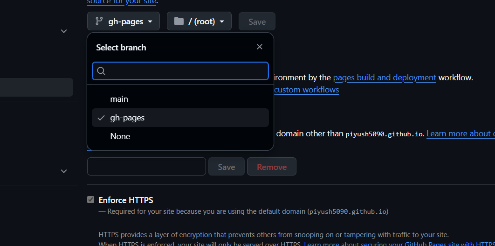

Full Setup Guide: From Python to a Live Site¶
This guide provides a complete walkthrough of all the steps needed to create a documentation website using MkDocs, starting from zero.
Step 1: Installing Python¶
Python is the programming language that runs MkDocs. You must have it installed first.
-
Check if you have Python: Open your command line or terminal and type:
bash python --versionIf you see a version number (e.g.,Python 3.9.5), you already have it. If you get an error, you need to install it. -
Download Python: Go to the official Python website: https://www.python.org/downloads/
-
Run the Installer:
- Download the latest version for your operating system (Windows, macOS, Linux).
- Run the installer.
- Important (for Windows): On the first screen of the installer, make sure to check the box that says "Add Python to PATH". This will make it much easier to run Python from the command line.
-
Verify the Installation: Close and reopen your terminal and run
python --versionagain. You should now see the version number.
Step 2: Installing MkDocs¶
MkDocs is a Python package. You can install it using pip, the Python Package Installer, which comes included with modern versions of Python.
- Open your terminal or command line.
-
Run the installation command:
bash pip install mkdocsThis will download and install the MkDocs package and its dependencies. -
(Optional) Install a Theme: To get advanced features like a right-side navigation menu, it's best to install a theme like Material for MkDocs:
bash pip install mkdocs-material
Step 3: Creating Your Documentation Project¶
Now that the software is installed, you can create your project.
-
Navigate to where you want your project: In your terminal, use the
cd(change directory) command to go to the folder where you want to create your project (e.g.,cd Desktop). -
Create the project: Run the
mkdocs newcommand followed by the name of your project folder.bash mkdocs new my-new-docs -
Review the files: This command creates a new folder named
my-new-docswith the following structure:my-new-docs/ ├── mkdocs.yml # The main configuration file. └── docs/ └── index.md # The homepage for your documentation.
Step 4: Adding and Editing Content¶
-
Edit the Homepage: Open the
docs/index.mdfile in a text editor and change its content. You can use the Markdown syntax detailed in this project's README. -
Create New Pages: To add more pages, simply create new
.mdfiles inside thedocs/folder. For example, you could createdocs/install-guide.md. -
Configure the Site Navigation: To make your new pages appear in the site's navigation menu, you must edit the
mkdocs.ymlfile and add anavsection.Example
mkdocs.yml: ```yaml site_name: My Awesome Docsnav: - 'Home': 'index.md' - 'Installation': 'install-guide.md' ```
Step 5: Key MkDocs Features & Commands¶
See Your Site Locally¶
To preview your website as you are working on it, navigate into your project folder (cd my-new-docs) and run:
mkdocs serve
This starts a local web server at http://127.0.0.1:8000/. Open this URL in your browser. The site will automatically refresh whenever you save a file.
Change the Theme¶
To use a theme you installed (like Material), edit the theme section in mkdocs.yml.
site_name: My Awesome Docs
nav:
- 'Home': 'index.md'
theme:
name: material
Build the Final Website¶
- First, generate the static site:
mkdocs build
This will create a site/ folder with all your HTML/CSS/JS files.
- Push your MkDocs project to GitHub. (Make sure your repo has mkdocs.yml and docs/.)
- Deploy with:
mkdocs gh-deploy
- MkDocs will build and push your site to a branch called gh-pages.
- Then your site will be available at:
https://<username>.github.io/<repo>/
